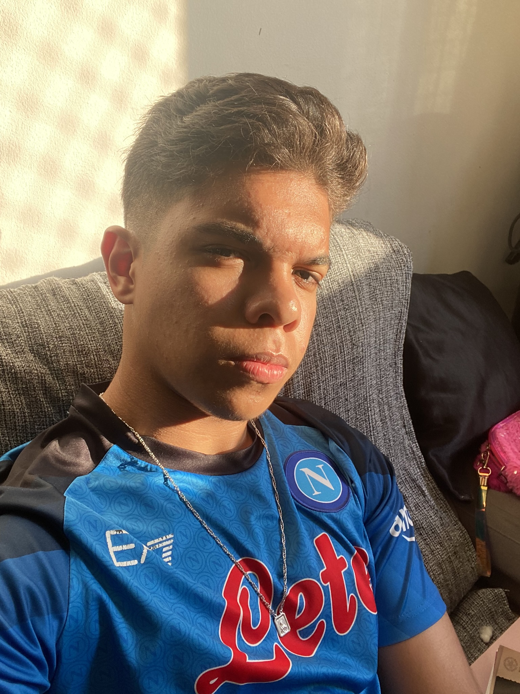

Soft Skills
- Disciplina
- Proatividade
- Facilidade em aprender
- Organização
- Pensamento lógico
Desenvolvedor Backend em formação | Java
Olá!
Sou desenvolvedor em formação, apaixonado por tecnologia e focado em evoluir constantemente através da prática. Desejo evoluir constantemente através da prática, projetos e resolução de problemas, com o objetivo de ingressar na área e crescer como desenvolvedor.

Busco uma oportunidade de estágio em desenvolvimento backend, com foco em Java, onde eu possa contribuir em projetos financeiros e evoluir minhas habilidades na prática.
| Curso | Instituição | Ano | Descrição |
|---|---|---|---|
| Ensino Médio Técnico | ETEC | 2024 | Formação integrada ao ensino médio com base em tecnologia e projetos práticos. |
| Técnico em Desenvolvimento de Sistemas | SENAI | Em andamento | Curso voltado ao desenvolvimento de sistemas, programação e lógica computacional. |
| Graduação em Tecnologia | FIAP | Em andamento | Graduação focada em desenvolvimento de software, inovação e tecnologias modernas. |
Ainda não possuo experiência profissional formal, mas desenvolvo projetos acadêmicos e pessoais com foco em backend, utilizando Java, APIs REST e banco de dados, aplicando na prática conceitos de programação e versionamento com Git.
Aplicação desenvolvida para auxiliar no controle financeiro familiar, permitindo o registro, organização e análise de receitas e despesas.
API REST desenvolvida para gerenciamento de transações financeiras, permitindo cadastro, consulta e organização de dados
Página web responsiva desenvolvida com foco em apresentação de conteúdo, utilizando boas práticas de HTML e organização de layout.
Em breve...